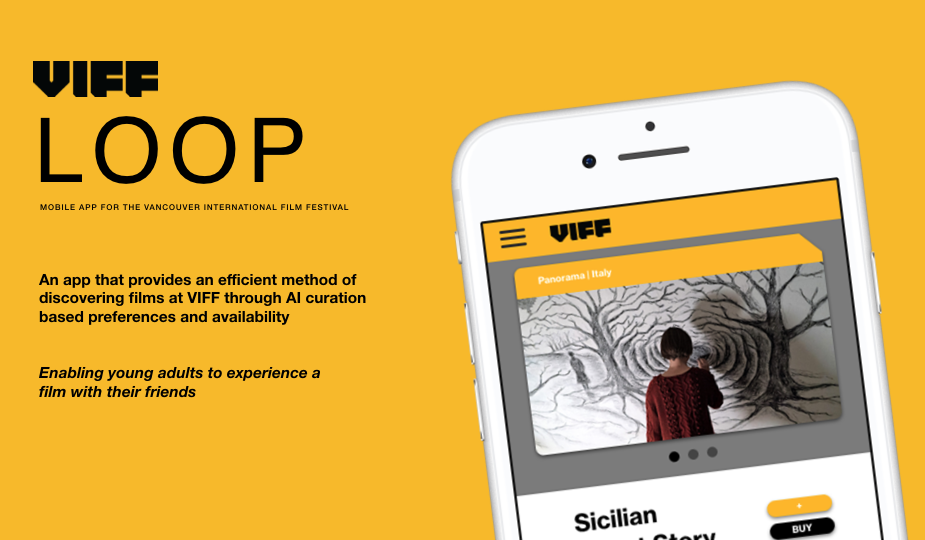

Dutch Design '19
Legacy Research Project
Interaction Design
Web Development
Video editing
A bi-annual legacy research project run by professor Russell Taylor to document and research Dutch Design in the Netherlands.
16 interviews, 1 short film - shot in 9 different cities.
Live Website GitHub

VIFF
Interaction Design Project - UX/UI Design
Interaction Design
UX Design
UI Design
A design intervention for the Vancouver International Film Festival. "Loop" is a mobile app that aims to bridge the gap between youth audience members and their attendance to the festival.

PayByPhone
Visual Design - Marketing Materials + Illustrations
Illustrations/Animations
Marketing visuals
Social media strategy
As a digital design intern on the marketing team, I primarily created visuals for both internal/external marketing communciation pieces, social media, and implemented new brand imagery.
PeaceGeeks
Crowdfunding Campaign - Experience Design
Art direction
Web Development
User Research
PeaceGeeks is a non profit organization that helps refugees settle into Canada.
I had the pleasure of conducting the art direction of the 2018 crowfunding campaign called #GiveItUp4Peace, producing internal/external communciation visuals, user journey mapping the experience and developing the website.
GitHub

◌ VISUALS